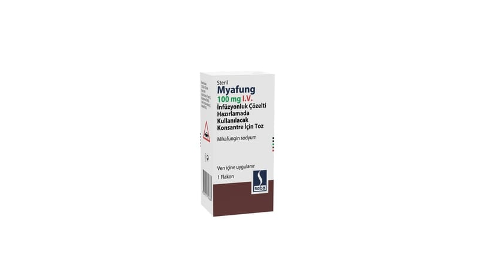

Myafung 100 mg I.V. İnfüzyonluk Çözelti Hazırlamada Kullanılacak Konsantre İçin Toz, 1 ADET

Ne için kullanılır
KT · Bölüm 1MYAFUNG içinde dondurularak kurutulmuş, sıkıştırılmış beyaz-beyazımsı toz bulunan flakonlarda sunulmaktadır.
MYAFUNG, mikafungin sodyum etkin maddesini içerir. Her flakonda 100 mg mikafungine eşdeğer 101,73 mg mikafungin sodyum vardır. MYAFUNG, sulandırılarak çözelti haline getirilir. Önerilen şekilde rekonstitüye edildiğinde mL başına 20 mg mikafungine eşdeğer miktarda 20,35 mg mikafungin sodyum içerir.
MYAFUNG, mantar hücrelerinin neden olduğu enfeksiyonları tedavi etmek için kullanılan bir ilaçtır. MYAFUNG, Kandida olarak adlandırılan mantar veya maya hücrelerinin neden olduğu mantar enfeksiyonlarını tedavi etmek için kullanılır. MYAFUNG, sistemik enfeksiyon olarak
adlandırılan vücudun içine bulaşmış mantar hücresi kaynaklı enfeksiyonları tedavi etmede etkilidir. Mantar hücresinin duvar yapısının bir kısmının üretimini engelleyerek etkisini gösterir. Mantarın yaşamaya ve çoğalmaya devam etmesi için hücre duvarının bozulmamış olması gerekmektedir. MYAFUNG, mantar hücre duvarında bozukluklara neden olarak, mantarın ölmesine neden olur ve çoğalmasını önler.
MYAFUNG, Çocuklarda (yenidoğanlar dahil) ve yetişkinlerde, İnvaziv kandidiyazis yani vücudun içine Kandida adı verilen mantar hücresinin bulaşmasıyla oluşan ciddi mantar enfeksiyonunun tedavisinde, Damardan verilen (intravenöz) tedavinin uygun olduğu durumlarda, yemek borusu dokusuna yerleşen mantar enfeksiyonu tedavisinde, Aspergillus (küf) ve Kandida (maya) adı verilen mantar türlerinin neden olduğu vücut içi mantar enfeksiyonlarına yakalanma riski olan Kök Hücre Nakli alıcılarında veya 10 günden fazla kan hücrelerinden nötrofillerin 500 hücre/ μL’den düşük olduğu kişilerde, İnvaziv aspergillozun yani vücudun içine Aspergillus (küf) adı verilen mantar türlerinin neden olduğu vücut içi ciddi mantar enfeksiyonlarının kurtarma tedavisinde veya invaziv aspergilloz tedavisinde diğer mantar enfeksiyon tedavisinin tolere edilemediği durumlarda tek başına veya diğer mantar enfeksiyonunu tedavi eden başka bir ilaç ile birlikte kullanılır.